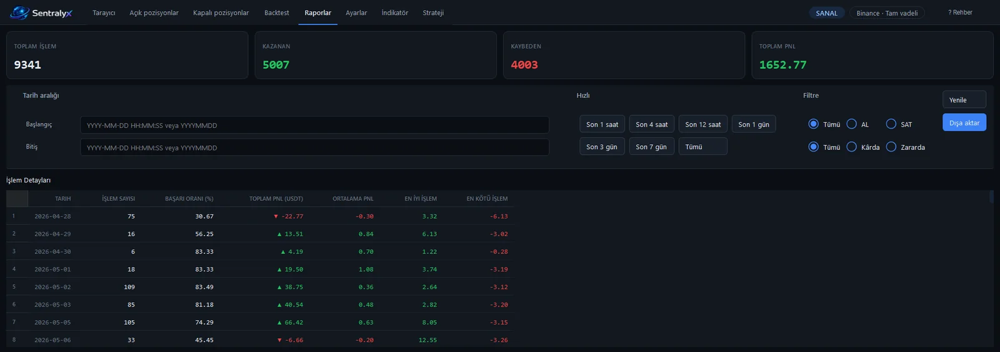

Отчёты
Аналитика эффективности и отчёты по стратегиям
Дневная сводка, доля успешных сделок, общий и средний PnL, лучшая и худшая сделка за выбранный период. Экспорт в CSV, PDF или Excel.

Реальный экран приложения, снят в виртуальном режиме.
Результаты по дням — видна тенденция
Отчёты сводят историю сделок по дням, чтобы было видно, как стратегия работала в каждый день.
Диапазон дат и быстрый выбор
Укажите даты начала и конца или используйте быстрый выбор: последние 1, 4 и 12 часов; последние 1, 3 и 7 дней; всё.
- BUY, SELL или все
- В прибыли, в убытке или все
- Обновление в один клик

Таблица дневной сводки
Для каждого дня в одной строке — число сделок, доля успешных, общий PnL, средний PnL, лучшая и худшая сделка.
- Доля успешных сделок в процентах
- Общий и средний PnL
- Лучшая и худшая сделка

Поделитесь отчётом или сохраните его
Экспортируйте отчёты в CSV, PDF или Excel, а детали сделок смотрите в истории.
- CSV, PDF и Excel
- Закрытые позиции — для деталей
- Результаты виртуального и реального режима

Что есть в отчётах?
Сводка, фильтры и экспорт на одном экране.
Диапазон дат
Ручной ввод или быстрый выбор.
Доля успешных сделок
По дням и в целом.
Сводка PnL
Общий и средний PnL, лучшая и худшая сделка.
Фильтры
BUY/SELL и прибыль/убыток.
Экспорт
CSV, PDF и Excel.
Сводные карточки
Всего сделок, прибыльные, убыточные и общий PnL.
Частые вопросы
В какие форматы можно экспортировать отчёты?
CSV, PDF и Excel.
Разделяют ли отчёты реальные и виртуальные сделки?
Отчёты сводят историю сделок используемого режима. Виртуальные результаты не являются результатами реальной торговли.
Показывают ли отчёты будущую доходность?
Нет. Отчёты обобщают прошлые сделки и не гарантируют будущих результатов.
Связанные страницы
Проверьте стратегию в виртуальном режиме уже сегодня
Скачайте приложение, соберите стратегию и посмотрите, как она работает, без реальных денег.